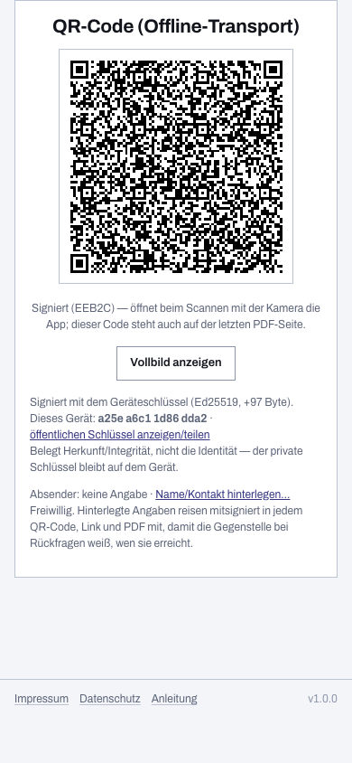

Papier-Erfassungsbogen oder digital?
Der Einheiten-Erfassungsbogen auf Papier hat sich über Jahrzehnte bewährt: Er braucht keinen Strom, jeder kennt ihn, und er überlebt auch einen Regenschauer im Klemmbrett. Wenn du ihn ersetzen willst, solltest du gute Argumente haben — und du solltest hören, wo das Papier weiterhin gewinnt. Genau das findest du hier.
Der Vergleich im Überblick
| Papierbogen | Digitaler Bogen (diese App) | |
|---|---|---|
| Ausfüllen | Handschrift auf der Motorhaube, jedes Mal von vorn | Vorlagen, Beispielbögen und Vorbelegungen; beim nächsten Mal passt du nur an |
| Lesbarkeit | Hängt von Handschrift, Wetter und Eile ab | Immer druckschriftlich — als PDF im gewohnten Papier-Layout |
| Stärke-Summen | Taschenrechner am Meldekopf, bei jeder Änderung neu | Laufend summiert über alle Einheiten, mit Zwischensummen je Zug |
| Übergabe | Blatt wechselt die Hand; die Gegenstelle tippt ab oder heftet ab | QR-Code scannen — der komplette Bogen ist im Gerät der Gegenstelle, ohne Internet |
| Folgemeldung | Neues Blatt; was sich geändert hat, muss jemand vergleichen | Die App zeigt die Änderung: Stärke 12 → 9, Fahrzeug abgemeldet |
| Ausfallsicherheit | Funktioniert immer — solange ein Stift da ist | Offline nach dem ersten Aufruf; braucht ein geladenes Gerät. Deshalb: druck das PDF und führ Papier mit |
| Datenschutz | Das Blatt liegt, wo es liegt | Alles bleibt lokal auf deinem Gerät — kein Server, keine Cloud, keine Konten |
| Kosten | Druck und Ablage | Kostenlos, freie Software (EUPL-1.2) |
Die ehrliche Antwort: kein Entweder-oder
Der Punkt, an dem dieser Vergleich schief würde, ist die Annahme, du müsstest dich entscheiden. Diese App ist bewusst so gebaut, dass das Papier bleibt: Sie erzeugt das gewohnte Papierformular als PDF — und setzt auf die letzte Seite einen QR-Code, der den kompletten Bogen enthält. Dasselbe Blatt ist damit beides zugleich: lesbar für Menschen, scanbar für Maschinen. Fällt die Technik aus, funktioniert das Blatt wie eh und je; steht am Meldekopf ein Tablet, spart der Scan das Abtippen.

Und Excel?
Tabellenkalkulationen sind der übliche Mittelweg — und im Einsatz der unglücklichste: Die Datei lebt auf einem Rechner, die Übergabe braucht USB-Stick oder Netz, das Layout entspricht keinem Vordruck, taktische Zeichen fehlen, und ob die Summenformel noch stimmt, sieht niemand. Der digitale Erfassungsbogen nimmt die Rechenarbeit ab, ohne diese Nachteile zu erben: festes Formular-Layout, Übergabe per QR-Code von Gerät zu Gerät, Felder wie auf dem Vordruck — und brauchst du die Daten doch in einer Tabelle, exportierst du die Einsatz-Sammlung als CSV.
Ausprobieren kostet nichts
Die App läuft im Browser, ohne Anmeldung und ohne Installation; alle Daten bleiben auf deinem Gerät. Einstiege für deine Organisation: THW, Feuerwehr, DLRG, Katastrophenschutz der Länder — und für die Gegenseite der Meldung: Meldekopf digital.